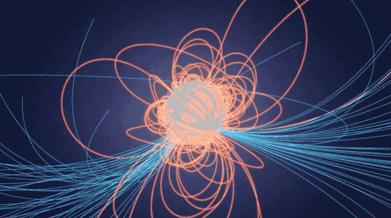
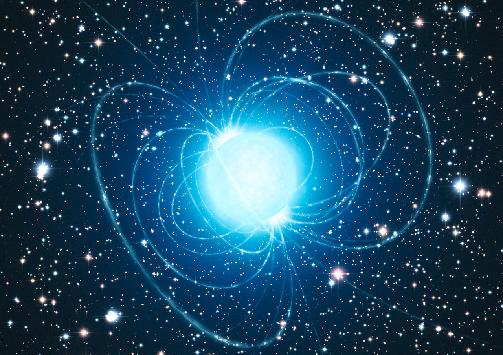

Критическое поле КЭД
$E_{cr} = {m^2c^3}/{e\hbar} \approx 1.3\times10^{16}\ \text{В/м}$, $B_{cr} = {m^2c^3}/{e\hbar} \approx 4.4\times10^{13}\ \text{Гс}$
Поле вблизи астрофизических объектов (нейтронные звёзды, пульсары, чёрные дыры)


Поле вблизи ядер тяжёлых атомов